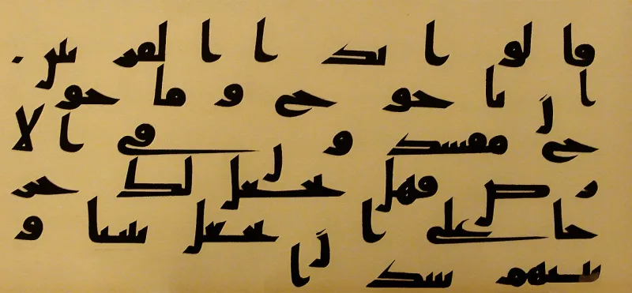
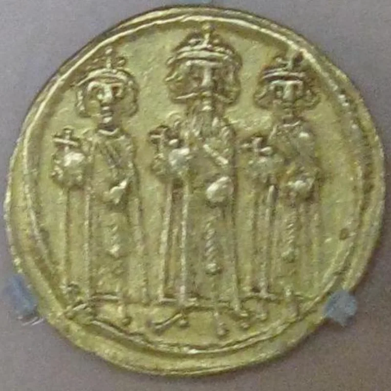
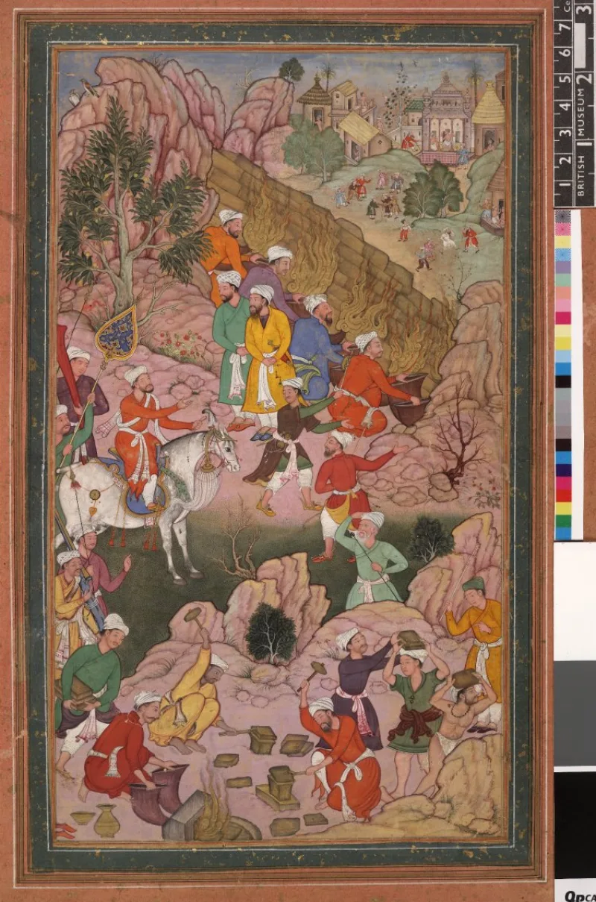

No good counter-argument has been published by Muslim scholars.
Quran 18:83-102 tells of Dhul-Qarnayn, the two-horned one. He travels to the place where the sun sets and the place where it rises.
He builds a wall of iron and brass that shuts in Gog and Magog until the end of the age.
The Syriac Alexander Legend is a Christian text. Its final form dates to about 629-630 AD, with a core from the 6th century.
It has the same sequence, the same two-horned hero, the same foul water at the sunset place, and the same wall. Alexander is shown horned on his coins.
Kevin van Bladel published on this in 2008. Tommaso Tesei followed with a book from Oxford University Press in 2023.
Both argue the Quranic account depends on the legend. A Greek pagan king, remembered through Christian storytelling, arrives in the Quran as a monotheist hero.
Three lines are offered. On identity, Maududi and others say Dhul-Qarnayn is Cyrus the Great, the two-horned ram of Daniel 8:20, or an unknown king.
On dating, the legend reached its final form in 629-630. That may be too late to be a source for a Meccan surah.
So both may draw on older oral material. On purpose, the Quran retells a story its audience already knew and corrects it toward monotheism, dropping the Christian elements.
Strong for you, and the academy agrees. Tesei dates the legend's core to the mid-6th century, which removes the timing objection.
The Cyrus identification is a 20th-century idea with no early tafsir support — classical commentators themselves often said Alexander. Even the common-source answer grants the point.
Legendary material is presented as history.
"A Christian legend tells this same story first. Would you be willing to read them side by side?"



They say he is Cyrus, and both stories may draw on older material.
Three lines are offered in reply. On identity, Maududi and others hold that Dhul-Qarnayn is not Alexander but Cyrus the Great. Cyrus was kind to those who worshipped one God, and he is the two-horned ram of Daniel 8:20. Others say he is an unknown ancient king.
On dating, the Syriac Legend reached its final form about 629-630 AD. That may be too late to be a source for a Meccan surah. So both may draw on older oral material held in common.
On purpose, the Quran retells a story its audience already knew. The questions came through Jews, and the Quran corrects the story toward the one God. A shared story frame is not an error. And the Quran leaves out the legend's plainly Christian parts.
Strong for you, and the field agrees: a legend is told as fact.
Scholars in the field mostly hold that the Quran depends on the legend. At the least, both share the same legend-matter. Tesei dates the core of the legend to the mid-6th century. That removes the timing objection.
The Cyrus reading is a 20th-century defence with no early tafsir support. The old commentators themselves often named Alexander. Even the shared-source answer still grants the deciding point. The Quran gives legend as fact — a real place where the sun sets, and an end-times wall that no one has found.